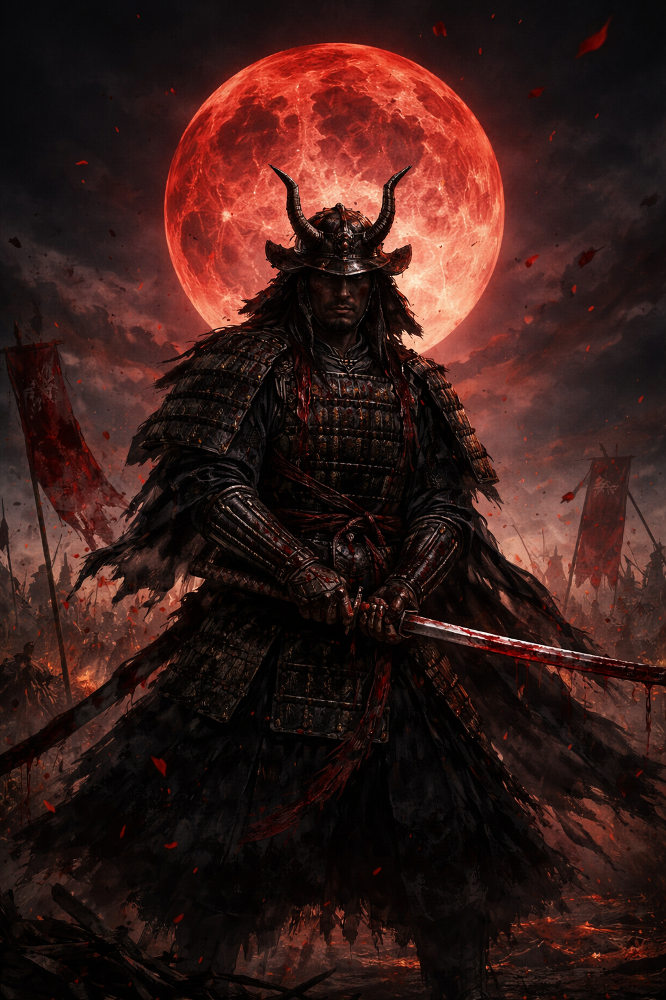

Samurais were the elite warrior class of ancient Japan, known for their strict code of honor called Bushidō, which emphasized loyalty, courage, and discipline. Emerging around the 12th century, they served powerful feudal lords known as daimyō and played a major role in shaping Japan’s history during periods like the Kamakura period. Skilled in martial arts, especially swordsmanship with the iconic katana, samurais were not only fighters but also practiced poetry, calligraphy, and philosophy. Over time, their influence declined with modernization in the 19th century, particularly after the Meiji Restoration, which led to the end of the feudal system and the samurai class itself.
